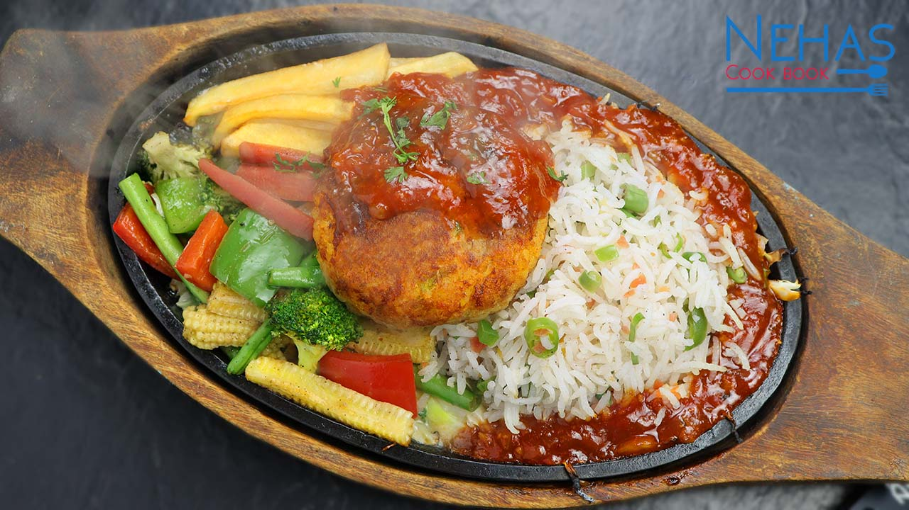

SIZZLER RECIPE!!!!

Description
Ingredients
- For Fried Rice:
- 2 cups cooked basmati rice
- 1 cup mixed vegetables (carrots, beans, bell peppers)
- 2 tbsp oil
- 1 tsp soy sauce
- Salt and pepper to taste
- For Paneer:
- 200g paneer, cubed
- 1 tbsp oil
- 1 tsp red chili powder
- 1/2 tsp turmeric
- Salt to taste
- For Baked Vegetables:
- 1 cup mixed vegetables (broccoli, zucchini, carrots)
- 2 tbsp white sauce (béchamel)
- 1/4 cup grated cheese
- Salt and pepper to taste
- For Pineapple and Mushroom Mix:
- 1/2 cup pineapple chunks
- 1/2 cup mushrooms, sliced
- 1 tbsp butter
- Salt and pepper to taste
- For Assembly:
- 1 sizzler plate (cast iron)
- Cabbage leaves (for lining)
- Sizzling sauce (optional)
Steps:-
- Heat oil in a pan, sauté the mixed vegetables, add cooked rice, soy sauce, salt, and pepper. Set aside.
- In a separate pan, sauté paneer with oil, red chili powder, turmeric, and salt. Cook until golden.
- Blanch and mix veggies with white sauce, top with cheese, and bake at 180°C (350°F) until golden.
- In another pan, sauté mushrooms and pineapple in butter until caramelized and cooked.
- Heat the sizzler plate until very hot. Line it with cabbage leaves.
- Arrange rice, paneer, baked vegetables, and mushroom-pineapple mix on the plate.
- Optionally drizzle sizzling sauce. Serve immediately for the best sizzle and flavor.